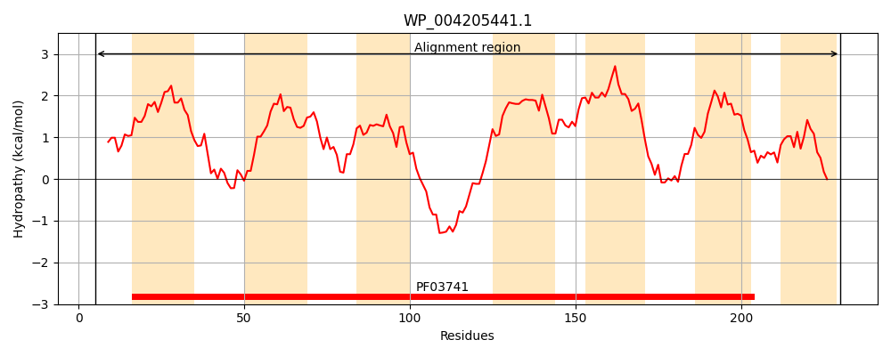
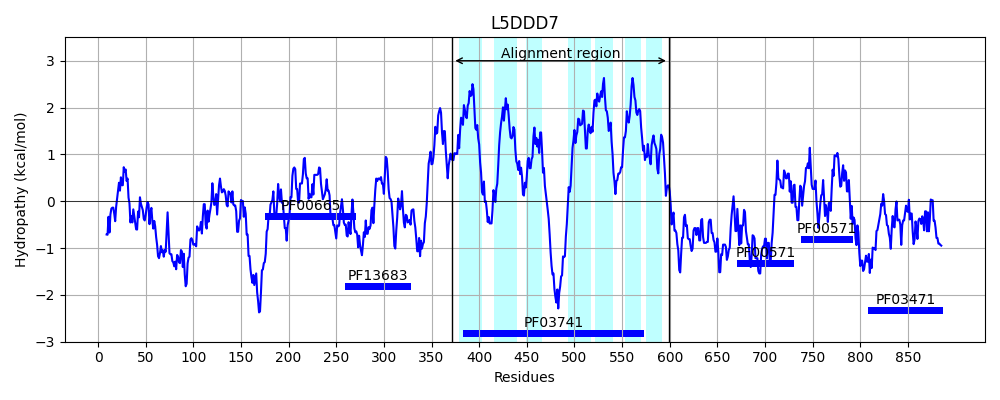
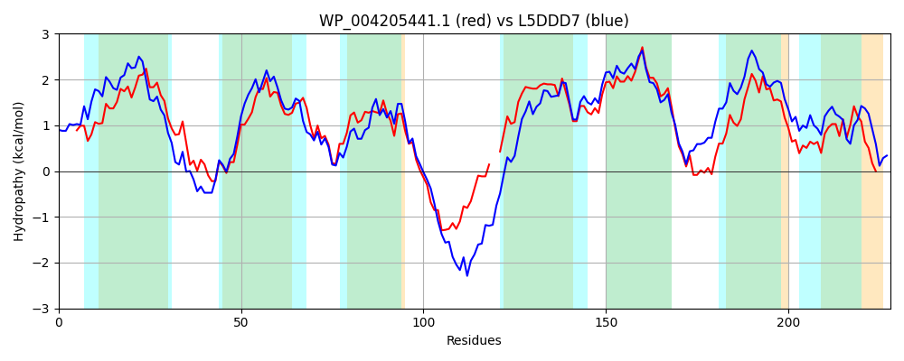

Hit Accession: L5DDD7
Hit TCID: 2.A.109.2.3
Hit Description: gnl|BL_ORD_ID|6164 gnl|TC-DB|L5DDD7|2.A.109.2.3 Membrane protein OS=Escherichia coli KTE166 GN=WKI_02229 PE=4 SV=1
Mach Len: 228
e:0.000000
Query TMS Count : 7
Hit TMS Count: 7
TMS-Overlap Score: 6.200000
Predicted Substrates:None
BLAST Alignment:
Score: 615 , Bit scores: 241 bits, E-value: 2.4e-74, Alignment length: 228, Percentage identity: 52
Query: 5 WITDPNAWLALGTLTLLEIVLGIDNIIFLSLVVAKLPTAQRAHARRIGLMGAMVMRLALLASIAWVVKLTNPLFTVLGQEISFRDLILLLGGLFLIWKASKEIHESIEGEEEGLKTNVH--SFLGAIVQIMLLDIIFSLDSVITAVGLSDHLFIMMAAVVIAVGVMMFAARPIGDFVDRHPSVKMLALSFLILVGFTLMLESFDVHVPKGYIYFAMFFSIAVESLNLL 230
WI DP+ W L TL ++E+VLGIDN++F++++ KLP AQR AR GLM AMVMRL LLASI+W+V LT PLF+ S RDLI+L GG FL++KA+ E++E +EG++ T F G + QI++LD IFSLDSVITA+G+ DHL +MMAAVVIA+ +M+ A++P+ FV+ HP++ +L LSFL+++GF+L+ E F +PKGY+Y A+ FS+ +E+ N L
Sbjct: 372 WIADPSIWAGLVTLVVIELVLGIDNLVFIAILAEKLPPAQRDRARITGLMLAMVMRLLLLASISWLVTLTQPLFSFRSFTFSARDLIMLFGGFFLLFKATMELNERLEGKDSNNPTQRKGAKFWGVVTQIVVLDAIFSLDSVITAIGMVDHLLVMMAAVVIAISLMLMASKPLTQFVNSHPTIVILCLSFLLMIGFSLVAEGFGFVIPKGYLYAAIGFSVMIEAFNQL 599 | Protein Hydropathy Plots: |
|---|
|  |  |
Pairwise Alignment-Hydropathy Plot:
|
|---|
|  |